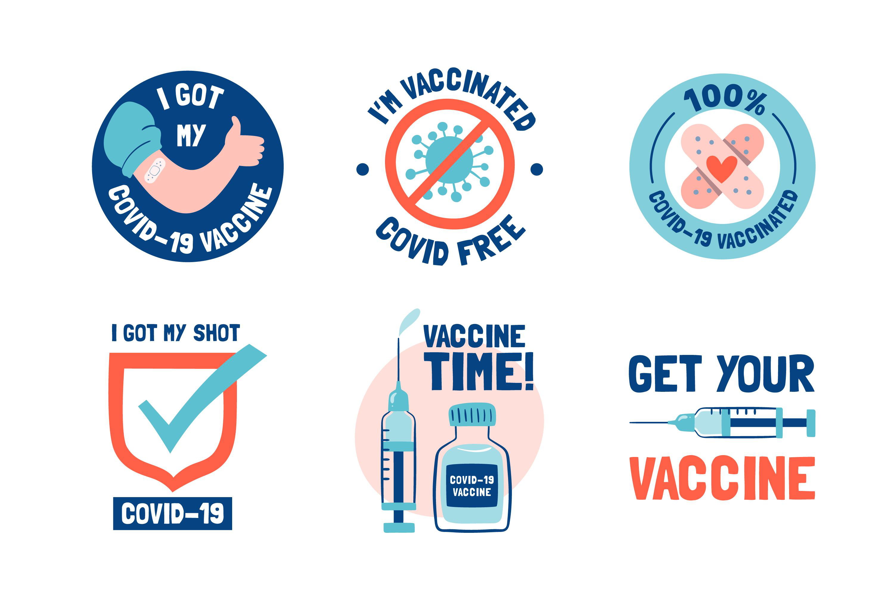

NOTE: Persons should take their vaccination card, TRN and a government issued identification/ letter from a Justice of the Peace to the sites to receive their second dose. The public is reminded that in order to be fully vaccinated, persons must receive the two doses of the AstraZeneca COVID19 Vaccine.

TO FIND MORE INFORMATION CLICK THIS LINK TO BE TAKEN TO THE VACCINATION TRACKER PAGE:
CLICK HERE!
DEFINITION LIST:
Vaccination Card
The main purpose of a Vaccination Card is for an individual to keep track of which vaccines they have received, the lot number, and when the person received it.
TRN
This stands for Taxpayer Registration Number (TRN) and it is a unique nine-digit identification number assigned to each individual taxpayer, business enterprise, organization (non-profit, partnership, charity, etc.) by way of an automated system.
To Find out more about the COVID-19 VACCINATION CARD:
CLICK HERE